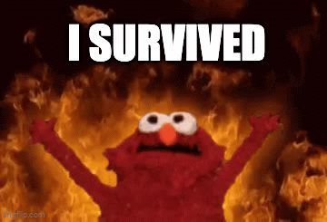

To Begin our tale:

Contrary to popular belief I am still alive and kicking. Crazy right? I know. I can barely believe it myself....
To Begin our tale:
Don't Believe me?
However...despite the irrefutable proof that I have survived the horrors of academia long enough to live to Joshua another day....
But......
Hopefully this appeal shall follow a long short, but quality line of successful appeals from yours truly. A personal favorite of mine being the count chopula appeal
from the
✨winter of '22✨
Linked here for your viewing pleasure: Count Chopula Presentation
So, we now wonder...why must I submit an appeal?
I am not one to cast blame. My schedules are often abominations of my own creation.
But this time I will be petty and slander Path@Penn a little bit.
Not because the system is inherently evil, it's just that evil things happen on it.
Evil things like.... the only recitation for my required class being during monday rehersals...
⣿⣿⣿⣿⣿⣿⣿⣿⣿⣿⣿⣿⣿⣿⣿⣿⣿⣿⣿⣿⣿⣿⣿⣿⣿⣿⣿⣿⣿⣿ ⣿⣿⣿⣿⣿⣿⣿⣿⣿⣿⣿⣿⣿⣿⣿⣿⣿⣿⣿⣿⡛⠉⣿⣿⣿⣿⣿⣿⣿⣿ ⣿⣿⣿⣿⣿⡿⠿⣿⣿⣿⡿⣿⡿⢿⣿⣿⡿⢿⣿⣿⠃⠀⣿⣿⢿⣿⣿⣿⣿⣿ ⣿⣿⣿⣿⠃⢰⣶⡄⣿⡆⠀⣫⣤⠀⠘⣥⣤⠀⢹⣿⠀⠀⣭⣤⠀⠘⣿⣿⣿⣿ ⣿⣿⣿⣿⣄⡀⠈⠙⢿⡇⠀⣿⣿⠀⠀⣿⣿⠀⢸⣿⠀⠀⣿⣿⠀⠀⣿⣿⣿⣿ ⣿⣿⣿⣿⠘⣿⡇⠀⣸⡇⠀⣿⣿⠀⠀⣿⣿⠀⠸⣿⠆⠀⣿⣿⠀⠀⣿⣿⣿⣿ ⣿⣿⣿⣿⣷⣶⣶⣾⣿⣶⣶⣾⣿⣶⣶⣾⣷⣶⣶⣶⣶⣶⣾⣿⣶⣶⣾⣿⣿⣿ ⣿⣿⣿⣿⣿⣿⣿⣿⣿⣿⣿⣿⣿⣿⣿⣿⣿⣿⣿⣿⣿⣿⣿⣿⣿⣿⣿⣿⣿⣿ ⣿⣿⣿⣿⣿⣿⣿⣿⣿⣿⣿⣿⣿⣿⣿⣿⣿⣿⣿⣿⣿⣿⣿⣿⣿⣿⣿⣿⣿⣿
Despite getting knocked down repeatedly by schedule chaos semester after semester...
I always find a way to claw myself back to band land

Band has quite literally been what's kept me sane for the past four years. Amazing place, amazing people, and even more amazing shenanigans.
If I had to leave a yelp review it would go something like this:
So, we now wonder.....
Will this appeal work?.....
Only time shall tell. But, as always, there is only one proper way to end a heartfelt, dry humor filled, code enfused appeal
I survived the LSAT(barely), and so can you(please don't, spare yourself), now please rise for the Red and Blue